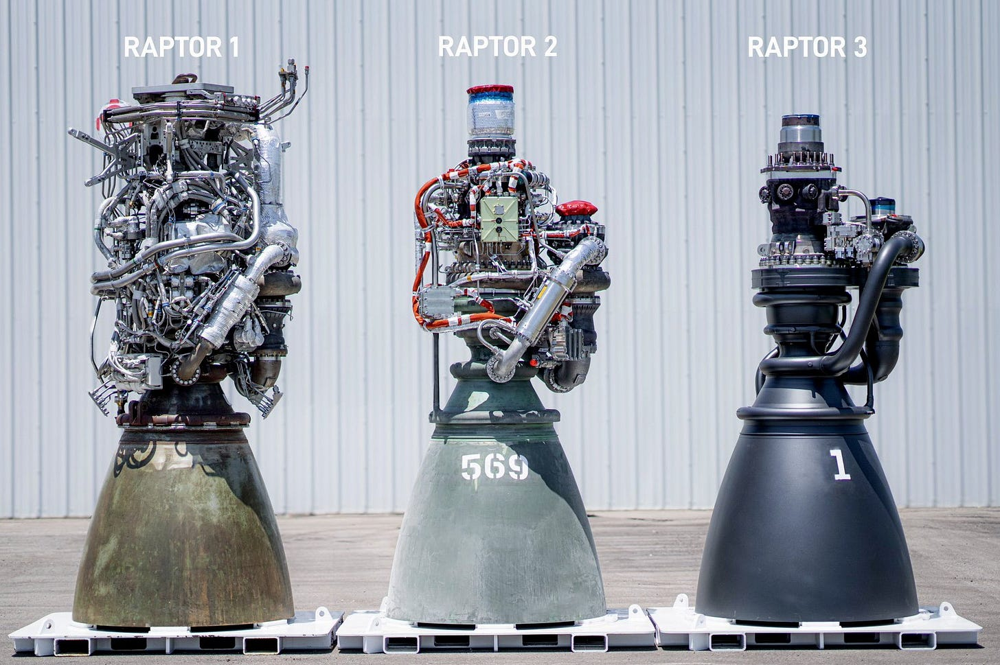

WEEKLY REMINDERS/ANNOUNCEMENTS – Eco 238, Week 9
Topics and Readings This Week: We’ll finish the Valuation Section of the course with an illustation of CV, travel cost and hedonic valuation methods and considering the value of a statistical life. We will follow up with the section on Property Rights.
Weekly Assignment: All but the final week assignments for the entire year have been posted.
TA Office Hours and Info
Look for an announcement from our Head TA Jingyao Wang Wu for an update on Office Hours and discussion session opportunities.
My Availability
I will not be available until Monday morning. Call Alexa or Katherine if there is a serious issue, and they will route communication to me. Feel free during the week to call or text.
Check out Rochester events, office hour times and locations, department information, and up to date news and job opportunities (as they come to me) visit us at tiny.cc/RizzoHours. I update my calendar weekly on that page, and include other sometimes useful information on it for you.
This Week at Rochester
https://rochesterrizzo.github.io/Rizzo-Hours/this-week-at-rochester/
STAFF PICKS
Friday · Men’s Rugby Under the Lights! At Southside Field
This Friday, kickoff @7pm on Southside field!
Saturday · Home sports
Football, swimming, field hockey
Noon football vs. RPI; 1 PM swimming vs. Cortland; 4 PM field hockey vs. St. Lawrence.
Sunday · Voices
Chanticleer: Our American Journey
3 PM · Kilbourn Hall · Ticketed.
Monday · Ideas
5–7 PM · Humanities Center. Matt Seybold on AI and intelligence.
Monday · Jazz guitar
7:30 PM · Hatch Recital Hall · Free.
Tuesday · Literature
Lauren Acampora: Plutzik Reading
5–6 PM · Follow the organizer link for room confirmation.
Wednesday · Faith
Professors of Faith: Thomas Brown
6:30–8 PM · Wegmans Hall 1400.
Thursday · Original dance
7:30 PM · Smith Theatre. Free for UR students with ID.
Upcoming Special Events
The Politics and Markets Project, Moderated Panel Discussion Hosted by Professor David Primo
Title: AI and privacy (both thinking about government regulation and things like surveillance pricing, or, getting good deals!)
Date: Wednesday, November 4th
Time: 7:30pm to 8:30pm
Location: Wegmans Hall, 1400.
More Info on the PMP: Follow on Instagram
Department of Economics PIZZA and PAYOFFS Special Event
Title: Pizza and Payoffs: Everything you wanted to know about the Econ major — courses, careers, and what you can actually do with an economics degree.
Who: Professor Lisa Kahn and special guest Chris Nosko
Date: Monday, November 9
Time: 5:30pm to 7:00pm
Location: TBD
More Info: Chris Nosko is the head economist for Amazon! Very short department information session and lots of time for Q&A and discussions with Nosko and our department faculty.
Department of Economics Annual GILBERT LECTURE (walk around Harkness to see a little bit of its history)*

Title: TBD
Who: Robert Staiger, Chief Economist of the World Trade Organization
Date: mid-November
Time: TBD
Location: TBD
More Info: Learn more about Professor Staiger here.
THE GILBERT LECTURE
The Donald W. Gilbert Memorial Lecture is one of the great traditions of the University of Rochester Department of Economics.
Donald W. Gilbert was deeply tied to both the University and the city of Rochester. A Rochester native and East High graduate, he entered the University in 1917, graduated in 1921, earned a master’s degree in economics at Rochester, studied at Harvard, and then spent nearly his entire professional life at UR. He rose from instructor to professor and chair of Economics, became dean of graduate studies, and in 1948 became the University of Rochester’s first provost. During his leadership of graduate education, Rochester was admitted in 1941 to the Association of American Universities, then a very small group of the leading research universities in the United States and Canada.
Gilbert also believed strongly that economics should reach beyond the classroom and seminar room. He helped create the University of Rochester Management Clinics, which connected the University with dozens of Rochester businesses and industrial organizations, and he was heavily involved in civic and public-policy life. When he died in 1957, at only 57, President Cornelis de Kiewiet described him as one of the University’s most important links to the Rochester community.
After Gilbert’s death, his friends, colleagues, alumni, and former students established a memorial lecture in his honor. The goal was entirely consistent with Gilbert’s career: bring serious economics to bear on the difficult practical and policy problems of the day.
The first Gilbert Lecture was delivered on April 30, 1959, by the great public-finance economist Richard Musgrave, speaking on the federal budget and the American economy. What followed was an extraordinary run of speakers. In the first decade alone, the series included Paul Samuelson, Milton Friedman, Kenneth Boulding, Wassily Leontief, Robert Solow, and James Tobin.
Over the following decades, Gilbert lecturers have included many of the most important economists of the modern era: Kenneth Arrow, Arthur Lewis, George Stigler, Franco Modigliani, Gary Becker, Robert Fogel, Thomas Schelling, James Heckman, Vernon Smith, Peter Diamond, Richard Thaler, Michael Kremer, Paul Romer, and many others.
Remarkably, 18 Gilbert lecturers later received the Nobel Prize in Economics.
Just as important as the names are the subjects they came to Rochester to discuss: unemployment, inflation, economic growth, population, pollution, regulation, Social Security, technological change, development, financial crises, education, health care, inequality, international trade, and the institutions that shape economic life.
The Gilbert Lecture is not simply a celebration of famous economists. It promotes the particular idea about that Rochester economics takes the tools of the discipline and aims them at the world outside the classroom.
One final Rochester detail: Gilbert Hall is named for the same Donald W. Gilbert, another reminder of how significant he was to the development of the University.
Some Items that Caught Our Attention
Hello, there. It’s Dan + Tay, here to announce some big heart-led changes at Suarez Family Brewery.
Before you have a heart attack, just know that we are not permanently closing Suarez Family Brewery. In this tenuous time when we are seeing so many special small businesses closing - we have an even greater motivation to keep our weird little project alive.
We believe in the beer we make and the space that we cultivate. They are simple, but foundational to those who ‘get’ what we’re all about.
And so we are making changes in the year ahead to recalibrate and create some space to imagine the long-term future of Suarez Family Brewery, knowing that the current iteration has not been wholly sustainable for us.
For now, here’s what you need to know. We will continue to operate Suarez Family Brewery as you currently know it until Sunday November 22nd, 2026. After that we are shifting to an entirely new (to us) model for 2027.
Next year we’ll be scaling back our production, and opening for a Spring, Summer, and Fall ‘pop’ (each time open for two weeks in the taproom, sending out a round of mail orders, and serving our wholesale customers). Stay tuned for the exact dates of these 2027 ‘pops’ in the coming weeks.
We know that you likely have A LOT of questions, which we plan to answer as the month unfolds. Subscribe to our newsletter at the bottom of our homepage at drinksuarez.com to get the full story.
We know that big transitions can trigger a lot of grief, and with that grief can come a wide range of emotions (queue the 7 stages of shock, denial, anger, bargaining, sadness . . . ). Just know that we are with you in this process as we say goodbye to the structure of our business as it is - and also feel the heartbreak inherent in this big change.
More openly, this scaling back means we have to let go of our dedicated staff (currently Josh and Zach who have been with us full-time for 10 and 4 years, respectively, and Mateo who recently joined in the taproom part-time). It also means that we won’t be here every week for our dedicated regulars, or giving as much business to our core vendors (like Dorothee of ‘the pretzel’ fame). And there is a lot of pain (and a lot of guilt) in admitting that everything we tried to make this current structure work for everyone didn’t actually end up working for us.
Yet we also know that to keep Suarez Family Brewery sustainable - financially, energetically, and emotionally - we need this transition. You’ll hear more from each of us about why that is, but ultimately we realized that in trying to be fully available for everyone else we were forgetting a huge part of the equation in reciprocity in relationship: ourselves. The current structure did not make enough space for us to do our best work - personally or professionally. So here we are.
If this place - and the people who have been a huge part keeping it humming these past 10 years - hold a special place in your heart, be sure to come through before November 22nd for a pour (or a few) and a case of cans / bottles to hold you over until Spring.
Help us celebrate the life Suarez Family Brewery lived these first 10 years. We’ll be here and ever grateful to see you and serve you, as always.
With gratitude,
Dan + Tay
The Causal Effect of Foreign Ideas on U.S. Innovation
(via Marginal Revolution)
Globalization is once again better than many people realize:
We study the role of foreign ideas in U.S. innovation by constructing a directed “genealogy” of technologies from the full text of 13 million patents filed between 1887 and 2024. By tracing which earlier technologies appear in the founding patents of new ones, we recover a large-scale input–output network of technological recombination that identifies the foreign technologies that serve as inputs into innovation in the United States. We report four main findings.
First, foreign ideas are pervasive: 54% of U.S. technologies build on at least one foreign input, and the most fertile U.S. technologies rely on foreign inputs most heavily.
Second, foreign ideas have large causal effects on U.S. innovation. Using the historical settlement of migrants as a source of exogenous variation in local ancestry, we show that U.S. counties more exposed to knowledge from a given foreign country absorb substantially more technologies from that country and, in turn, invent significantly more U.S. technologies building on them.
Third, foreign ideas shape not only the level but also the direction of technical change: U.S. counties are far more likely to pioneer the specific technologies whose foreign inputs are already in their local idea stock, and the changing origins of foreign ideas accompany the shift of American innovation from its historical heartland toward the coasts.
Fourth, these effects leave a lasting imprint on local labor markets: decades later, counties that absorbed more of an origin’s ideas host more jobs working with those ideas, and even more work with the U.S. technologies descended from them.
Here is the full paper by Tarek Alexander Hassan, Aakash Kalyani & Juan Cruz Lopez Del Valle.
Ban data centers? Check. Subsidize enormous factories that make chips for data centers? Check. In NY. “GlobalFoundries, the semiconductor manufacturer that was spun off from AMD in 2009, will operate two new fabs planned for New York, funded by $21 billion from Japan. The US government is also taking a 4% equity stake in the company.”
Ho Hum, AI and Data Centers point toward solution to antiobiotics resistance crisis: “AI Virus vs. Bacterial Infection: An AI-designed virus (free w/email) is being used to treat a human patient with a deadly bacterial infection, according to US-based biotech startup Radical Numerics. Scientists have used bacteria-killing viruses, called phages, to treat infections for over a century (how phages attack, w/video). But finding suitable phages in nature is difficult and time-consuming. Radical Numerics says its AI model can create custom viruses in a matter of days. In the case announced yesterday, scientists used the model to modify a phage known to infect E. coli so it can latch onto a strain that has become resistant to antibiotics and available phages. The engineered phage successfully killed stubborn E. coli in lab tests, though some scientists are skeptical that the phage will work in humans, while others are concerned about bioengineering viruses as a field. Results are potentially months away.“
Paris is Burning: The Keynesian prescription — deficits during the bust, austerity during the boom — requires that whoever is in power during the boom take the political hit for doing the austerity. In practice, you can sometimes find politicians willing to spend their political capital on taking that hit, but it’s tough. Even Macron caved in the end. That points to a political-economic problem for Keynesian liberalism. It suggests — as James Buchanan foresaw — that spending is often less likely to be determined by the wise judgement of technocrats, and more likely to be determined by angry ignorant people burning down government buildings.
A Culture of Free Speech, Columbia Edition: Remember, kids: the point of a $90k/year liberal arts education is open-mindedness, strictly within the designated 3-degree radius of acceptable thought. Here is the offense: ““We believe that this collective frenzy is deeply unproductive, neglects any and all facts of the case which disagree with the ‘preferred’ narrative, and infantilizes women,” wrote juniors Nikos Mohammadi and Christina Ma. “It has also ushered in a climate on campus in which it is difficult to disagree with the maximalist position on what happened.” Reaction was swift after the Sundial, which calls itself the independent voice of Columbia University, published the piece last week. Multiple Sundial staff members quit in protest, while some circulated a petition calling for the publication to cease operations. Many posts on the campus forum Sidechat characterized the piece as repulsive. Student organizers of a Columbia free-speech alliance canceled a press-freedom event that was set to include the Sundial’s editor in chief—a move that has sparked its own backlash.
Defenders of the publication and free-speech advocates argue that the intense response reinforces a common criticism: that many prestigious colleges aren’t hospitable to dissenting views.
In an interview, Mohammadi and Ma said the campus reaction has proved their point. “It feels very meta because that was what we were talking about in our article,” Ma said. “We’ve been vindicated on that,” Mohammadi added.”
Mr. Lin: MR. LIN FROM THE CHINESE TAKEOUT (Bob Lonsberry of WHAM from Medina, NY)
I don't know how many hours Mr. Lin works in a day.
And I can't remember exactly how many daughters he and Mrs. Lin have.
But I do know that for years, maybe 30 years, as I've stopped down at his takeout, the last real business in the empty strip plaza, he has been there, over the burners, moving like the wind. Mrs. Lin has been beside him, synchronized, each of them cooking, feeding my family and some evenings it seems like half of our town. Hours on end, years on end, growing gray in our service.
With the girls at a table by the window in the front. Coloring and drawing when they were younger, pouring over their homework when they were older, hopping up to run the cash register or take an order. Remembering the names of everyone in town, addressing us all as Mr. So and So or Mrs. So and So.
Happy family. That's always what I order. Happy family.
And that is what they are. A happy family. In the land of the free. One of the best personifications of the American dream I've ever seen in my life.
For years, it seemed like if it wasn't a Lin girl who was the valedictorian up at the school it was a Medina boy from out on the farm. The two best families in town were the two whose parents spoke the worst English.
We went to Lin graduation parties, we cheered as they played soccer, we heard reports back from college, we kept the secret when one was dating a boy from a couple of towns over. We wondered at how Mr. and Mrs. Lin could work so hard. We wondered how they could keep it up with the girls almost all grown.
And we love them. They are good people. A good family. Wonderful daughters, and a mother and father who were best judged, like Jesus said, by the fruits they bore -- the girls they raised, the business they ran and the community they served.
Until today.
In the brilliant sun of a cool autumn day. In a town named after the financier of the Revolution; in a county named after a signer of the Declaration; in a village where the man who wrote the Pledge of Allegiance was born.
Until today. In a traffic stop as he drove to work.
A couple of heavyset fellas, in tactical vests, with one of them in a Buffalo Bills cap. Within sight of the takeout which Mr. Lin may never see again. Within sight of the takeout where the mayor and school superintendent would soon gather to support the family.
It was federal officers. Agents of an administration that's a stickler for civil immigration law but seemingly blind to constitutional constraint.
An administration I voted for but which has metastasized into a cancer on the body politic.
And today my country embraces Putin and kicks out Lin. And I've had enough. It makes no sense anymore.
But my problem is fixed with a voter-registration form. I don't know how to fix Mr. Lin's problem. I don't know how to convince an autocratic government that snatching up a salt-of-the earth family to meet a deportation quota is immoral and wrong, and contrary to the values that made America great.
The politicians say we need to keep it quiet. But that didn't work in Iraq or Syria or Guatemala or Argentina or Pakistan. Silence in the face of evil is complicity.
And when the Declaration said that all are endowed by their Creator with certain inalienable rights, it meant all.
Even the man who cooks your Chinese takeout.
And a country or a political party that isn't smart enough to figure out how to throw out the bad people and keep the good people has larger problems than immigration.
Mr. Lin is a better man than I, and he has proved it year after year down at the strip plaza, where he and his wife raised their girls and fed our town.
He has earned the right to be here, as assuredly as my birth gives me the right to be here
* * * * *
WINTERCOW’S MOOING: Crabpotism and Antisocial Punishment. Creepy voice podcast here; Need some time to make it sound better, suggestions welcome.
CHART(S) OF THE WEEK: “In-state solar mandates cost each D.C. customer $439 per year in 2025. If the solar mandates were repealed and PJM Tier I RECs replaced them, the RECs would cost $30 per year. If Texas solar RECs satisfied D.C.’s solar mandates, it would have added $2 per year to D.C. bills in 2025. Similar savings would be realized in Massachusetts, New Jersey, and Maryland, where regional RECs would have cost families and businesses an average of $16, $21, and $33, respectively, and Texas SRECs would have cost $1, $2, and $3, respective”
PHOTO OF THE WEEK: Profits and Performance and Resources: Raptor edition

VIDEO/DOCUMENTARY/BOOK/CARTOON, ETC OF THE WEEK: Meanwhile the Engineers are just lighting themselves on fire to see what happens.
![4-panel SMBC comic update. A header above the panels reads "reactions to AI automation." The first two panels show an artist and a mathematician working, and reacting to AI by saying "but I don't want to lose my job. I love it." The third panel shows an economist shouting "LONG HAVE I AWAITED THIS HOUR! DESTROY ME, EFFICIENCY AND LET UTILIZATION-ADJUSTED TOTAL FACTOR PRODUCTIVITY RISE ON THE WIND OF MY ASHES!" The final panel shows the economist getting his face blasted off as the artist and the mathematician stare perplexed.](assets/media/image6.jpeg)
* * *QUOTE * * *
“Fear is the disease. Hustle is the antidote”
Apocryphal?